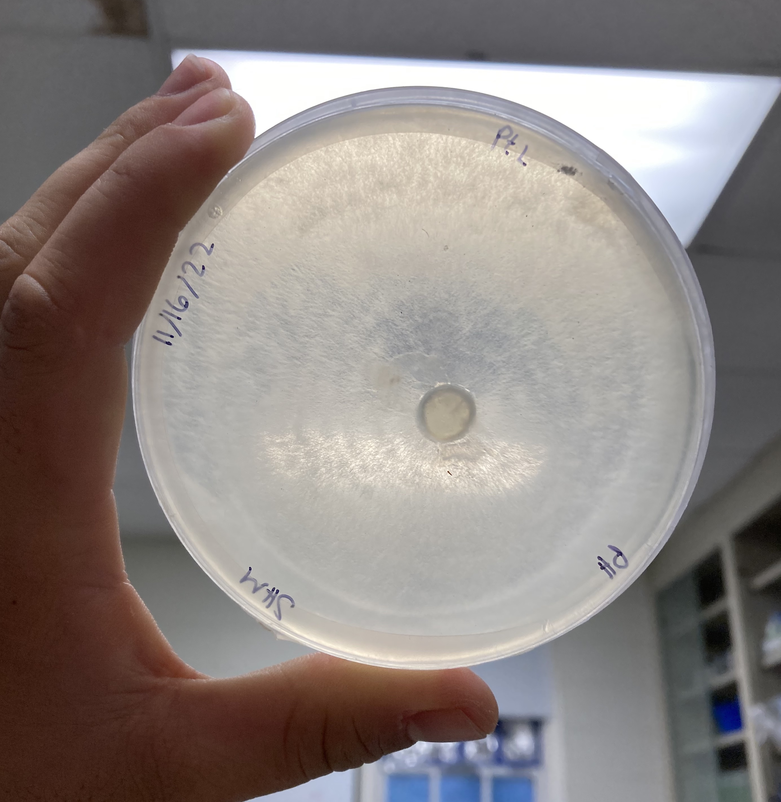

Project Overview
Sea level rise is changing the ecology and disease dynamics in coastal forests due to frequent flooding and the increased presence of salinity in the soil. The oomycete Phytophthora spp. is responsible for many plant diseases that have had significant environmental and economic consequences (Klinkowski 1970). Recently, invasive P. ramorum has been detected in Maryland, raising concerns about the health of native coastal flora, particularly under climate change (Maryland Department of Agriculture 2017).
Increased salinity in soil imposes similar physiological stress as drought does in native plants (Sanogo 2004). Therefore, I explored whether seawater intrusion would promote higher abundances of Phytophthora spp. in coastal soils of Southern Maryland due to potentially having higher plant infections caused by salinity stress.
Soil Collection
Soil sampling was performed by Jordan Manns and Mel Byrne for their research in Dr. Torres-Martínez's lab. The samples were collected from four different sites across a natural salinity gradient on the Potomac River at two different times of the year. One collection was performed in spring when Phytophthora spp. is likely to be more active, and at the end of summer when hurricane season starts on the Atlantic coast and there is likely to be increased seawater intrusion.
Culturing

The abundance of Phytophthora spp. was determined by performing serial dilutions of soil samples, plating them on the highly selective PARPH media, and incubating them at 25ºC. Colonies were counted after 4 days of incubation.
Analysis
The abundance of Phytophthora spp. varied by site depending on the season that the soil was collected. In both seasons, it is hard to tell a clear relationship between salinity and Phytophthora abundance. In the spring and summer, there is the highest abundances at the sites with the lowest salinity, but we also see a relatively high abundance at some higher salinity. These results suggest that seawater intrusion and seasonality could modify patterns of Phytophthora spp abundances in coastal soils of Southern Maryland, but further analyses should be done to make any definite conclusions. One possible approach would be to sample soil from a wider salinity range and in colder months as well.
References
Citation
@online{muir2023,
author = {Muir, Sam},
title = {Phytophthora Presence in {Southern} {Maryland} Coastal Soils},
date = {2023-11-10},
url = {https://shmuir.github.io/projects/2023-11-10-phytophthora/},
langid = {en}
}